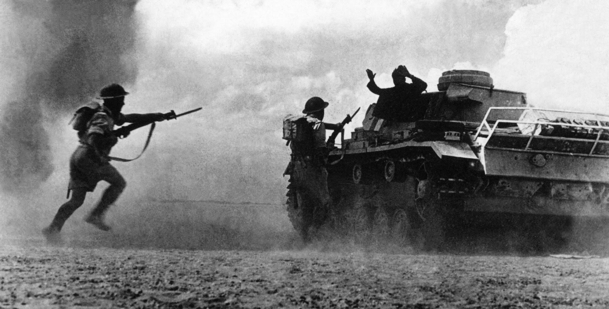

Tananyag bemutatása
A II. világháború az emberiség történelmének egyik legnagyobb és legpusztítóbb fegyveres konfliktusa volt. 1939. szeptember 1-jén tört ki, amikor a náci Németország megtámadta Lengyelországot. A háború hat évig tartott, és 1945-ben ért véget a tengelyhatalmak, különösen Németország és Japán vereségével.
A háború fő résztvevői két nagy szövetségi rendszerbe tömörültek:
- Tengelyhatalmak: Németország, Olaszország, Japán
- Szövetségesek: Egyesült Királyság, Szovjetunió, Egyesült Államok, Franciaország és más országok
A Szovjetunió vezetője a háború alatt Joszif Sztálin volt, aki meghatározó szerepet játszott a keleti front eseményeiben. Németország 1941-ben indította el a Barbarossa-hadműveletet, melynek célja a Szovjetunió lerohanása volt. A keleti front az egyik legvéresebb hadszíntérré vált.
1945-ben az Egyesült Államok atombombát dobott le Hirosima és Nagaszaki városaira Japánban, ezzel végérvényesen eldöntve a háborút a Csendes-óceáni térségben. A háború következményei súlyosak voltak: több tízmillió halott, hatalmas anyagi károk, és a holokauszt, amely során a náci Németország célja a zsidók, romák, fogyatékosok és más kisebbségek elpusztítása volt.
Fontos témák
- Előzmények és Hitler hatalomra jutása
- Főbb hadműveletek és csaták
- Hadszíntér: Európa, Afrika, Csendes-óceán
- Technológiai újítások: radar, atomfegyver, repülés fejlődése
- Háború vége, békekötések, ENSZ megalakulása
Hadszínterek
| Hadszíntér | Helyszínek |
|---|---|
| Európa | Keleti, Nyugati front |
| Csendes-óceán | Japán, Pearl Harbor |
| Afrika | El-Alamein |